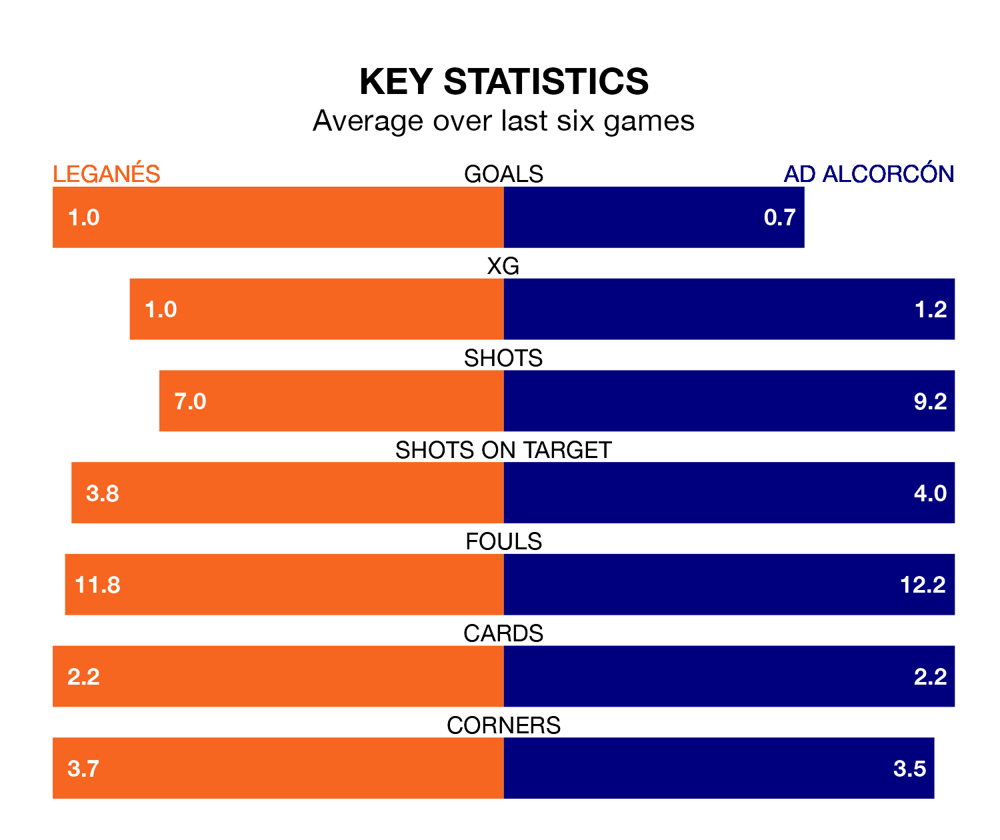

Leganés are heavy favourites to keep all three points at home in Sunday's kick-off against AD Alcorcón.
Leganés, who sit top of the Segunda División with 26 games played, are priced at 1.6 to seal victory at Estadio Municipal de Butarque.
Sitting 17 places and 19 points behind them in the table, Alcorcón are 5.7 to win with *Betting Company*, while the draw is at 3.4.
With 21 goals in 26 games so far this season, Alcorcón are scoring at below the league average rate with 0.8 goals per game. And they are conceding more than average, letting in 34 goals at a rate of 1.3 per game.
Leganés, meanwhile, are above average scorers, with 1.4 goals per game, compared to a league average of 1.1. They have conceded 0.6 goals per game.
With Diego Conde between the sticks, the hosts can rely on one of the league's safest pair of hands. He has kept 11 clean sheets in his 24 appearances this season, and no 'keeper has prevented the opposition scoring more often in the Segunda División.
In the away side's net, Lucas Nunes Anacker has five clean sheets in eight games.
In the last 10 years, Leganés and Alcorcón have played each other on 11 occasions. Leganés won six of them, Alcorcón three, and they drew twice.
On average, Leganés scored 1.4 goals and Alcorcón 0.9 in those matches.
Their last meeting was on January 5, when they played out a 0-0 draw.
Leganés are in mixed form in the Segunda División, with two wins and three draws from their last six games.
With three wins and two draws over that period, Alcorcón's form is slightly better – they have taken 11 points from 18, compared to Leganés's nine.
Leganés's last match was on February 9, a 0-0 draw against Levante UD.
Alcorcón beat FC Andorra 1-0 last time out, on February 11, with Javier Pérez Mateo on the scoresheet.
Updated: 13:30 (UTC), 12/02/24